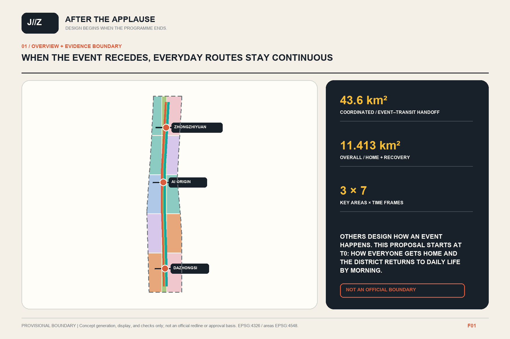
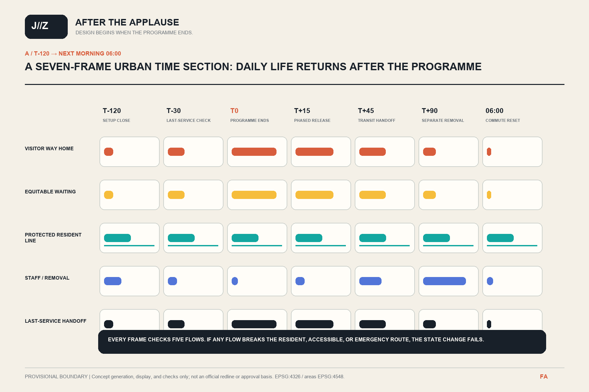
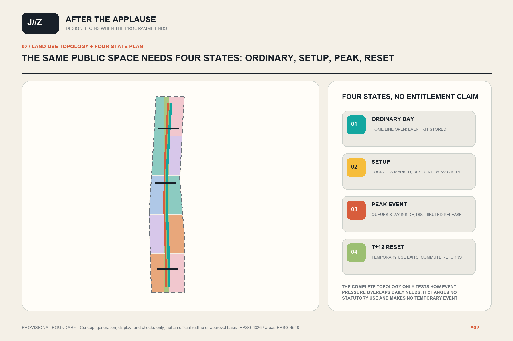
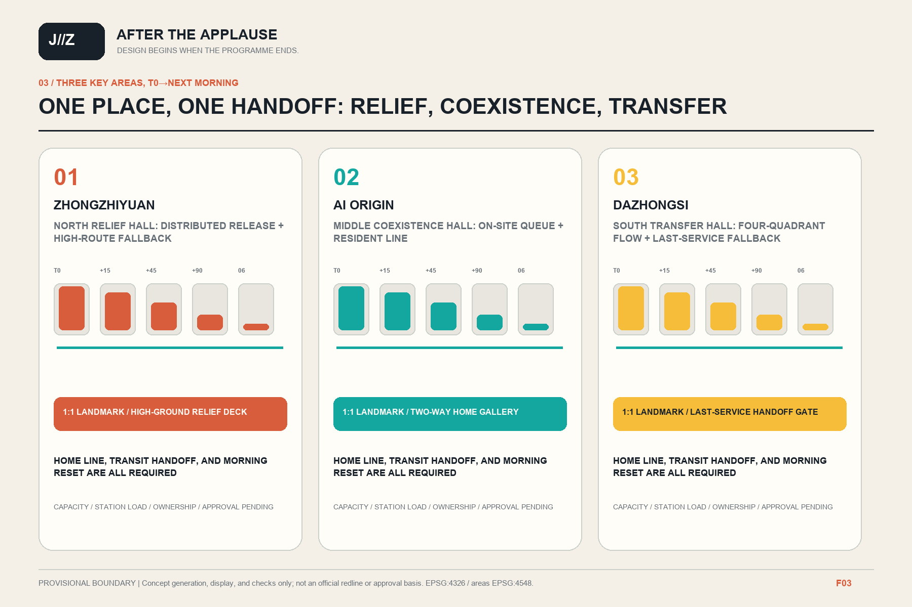
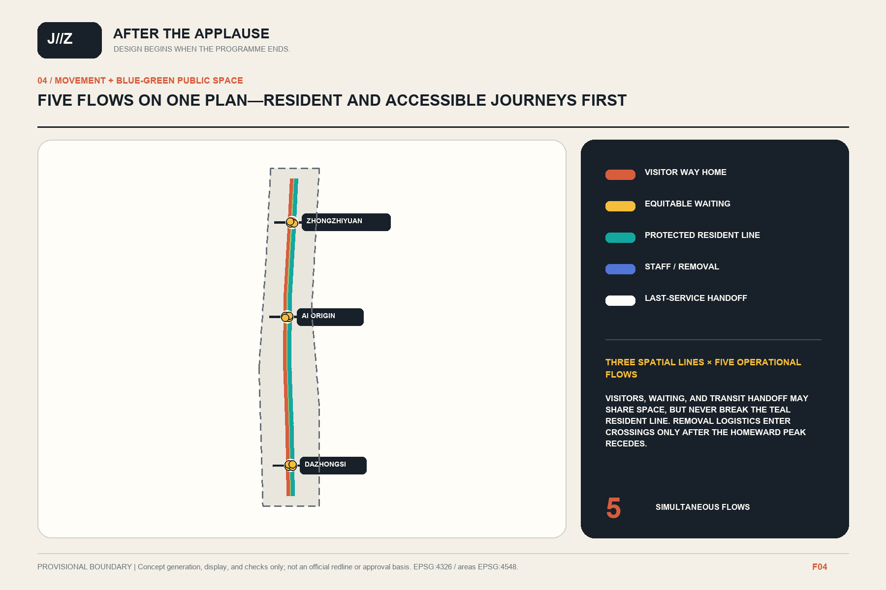
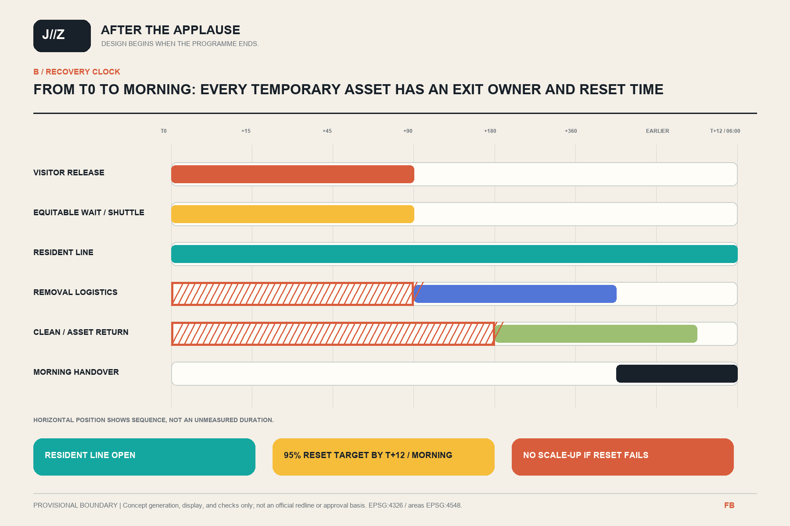
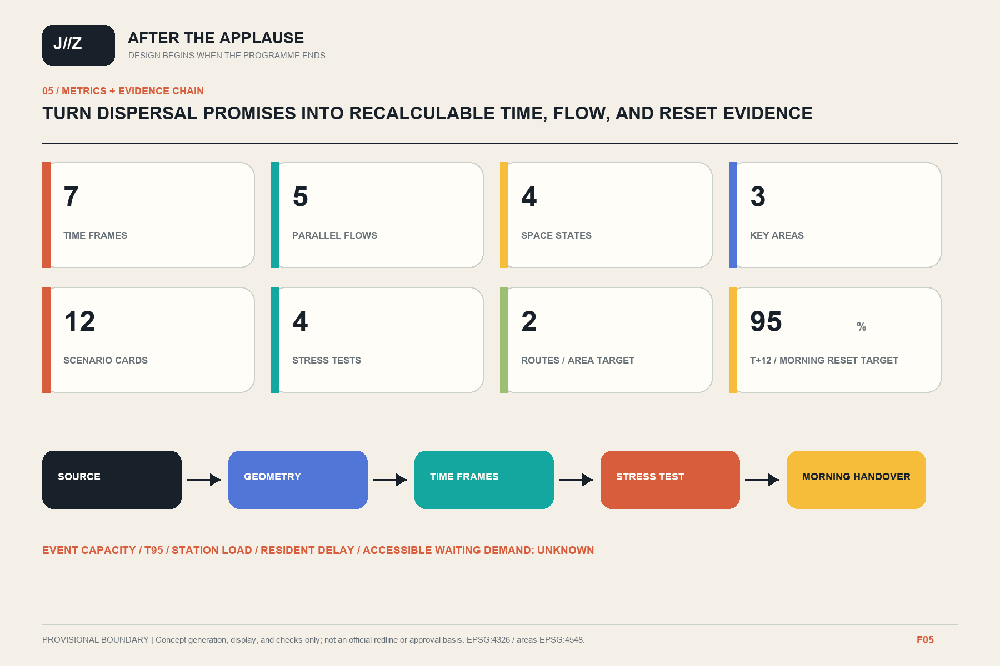

Others design how an event happens safely. We begin when the final programme ends: how everyone gets home and how the district returns to daily life by morning.
OVERVIEW · FROM EVENT THRESHOLD TO MORNING LIFE
F01

7time frames
5parallel flows
4space states
3key areas
11.413 km²Provisional overall area
9.89%Conceptual green ratio
4.84%Conceptual public-space ratio
SEVEN-FRAME URBAN TIME SECTION
T-120 → 06:00
Close setup; resident bypass first

ORDINARY / SETUP / PEAK / RESET
F02

THREE-AREA HANDOFF
F03
01
ZHONGZHIYUAN · RELIEF
Distributed release with a high-route fallback when low paths close.
02
AI ORIGIN · COEXISTENCE
Queues stay onsite; the resident line bypasses queues and the heritage quiet zone.
03
DAZHONGSI · TRANSFER
Four-quadrant dispersal, last-service handoff, and morning commute reset.

FIVE FLOWS ON ONE PLAN
F04
Visitor way home
Equitable waiting
Protected resident line
Staff / removal
Last-service handoff

RECOVERY CLOCK
T0 → NEXT MORNING

TWELVE SCENARIO CARDS
4 STRESS + 8 OPERATIONS
T01Weekday-peak plus event stress test
T02Storm closure of low routes
T03Single station-entry failure
T04Accessible-equipment failure retest
S05Zhongzhiyuan distributed arrival
S06Zhongzhiyuan high-route relief
S07Origin on-site queuing
S08Origin multi-station dispersal
S09Protected resident way home
S10Dazhongsi four-quadrant dispersal
S11Last-service transit porch
S12Next-morning public-space reset
METRICS + EVIDENCE CHAIN
F05

Boundaries, key areas, and areas are provisional. Event capacity, station load, T95, and resident delay remain unknown.
CC BY 4.0 · windchaser1280 · Codex / GPT-5 family · 2026-08-11